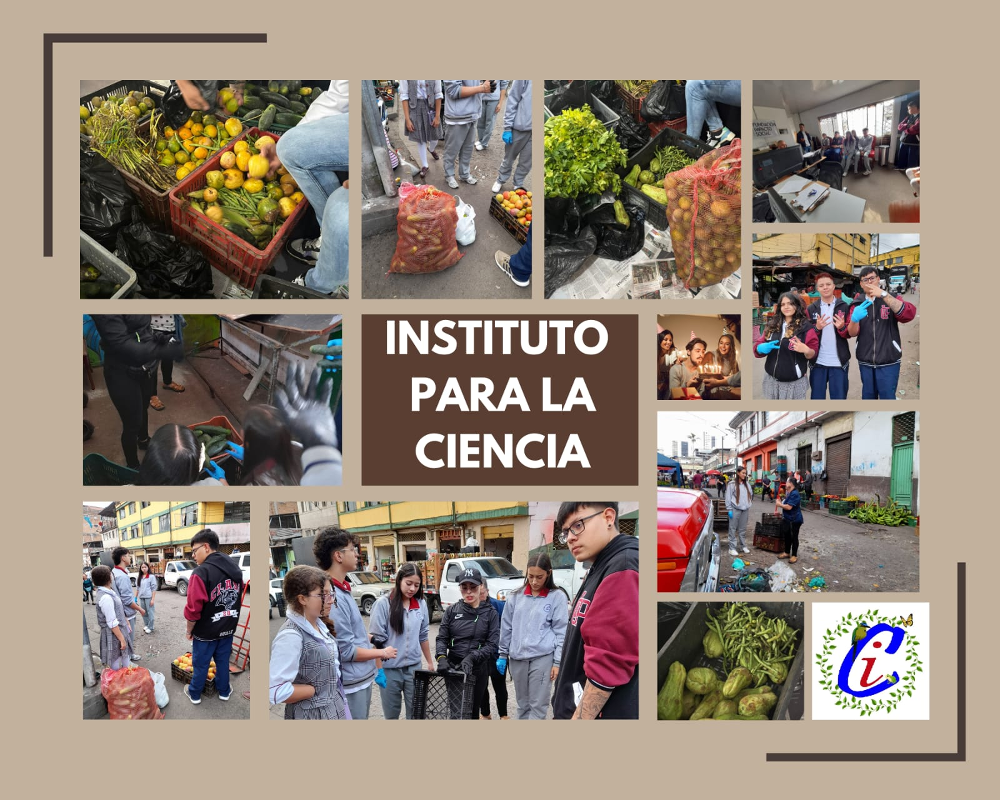

El proyecto inició en 2022 con una convocatoria de la agencia Chile 2811. El Instituto fue seleccionado en Manizales junto a cuatro escuelas más, recibiendo financiamiento para desarrollar un prototipo sobre agricultura urbana, nutrición y riego. En 2023, ganaron un premio que les permitió viajar a Bogotá y recibir cajas, carpa y deshidratador. Comenzaron con un jardín sencillo en vasos de icopor y evolucionaron cultivando hierbas medicinales, cebollas y pimentones deshidratados, creando un modelo educativo replicable de agricultura urbana sostenible.

🌱 Galeria
🌱 Galeria : Recolección de alimentos
📅 22 de Julio, 2025
Modificar la forma en que los estudiantes aprenden implica trasladar el entorno escolar tradicional a un lugar poco habitual:
La galería de Manizales. Este sitio, que recibe diariamente productos frescos de nuestros campesinos para asegurar la alimentación de miles de manizaleños, ha enfrentado un estigma y diversos tabúes.
El proyecto surge de una interrogante esencial: ¿Cuál es el origen de los alimentos que encontramos fácilmente en supermercados y tiendas locales?
Nos proponemos rescatar, junto a organizaciones sociales asociadas, los alimentos que están a punto de ser desechados debido a su apariencia o porque van a empezar a descomponerse
Con la colaboración entre la FIS (Fundación Impacto Social) y el Instituto Para La Ciencia, bajo la dirección de su rectora, estudiantes, profesores y un exalumno han potenciado iniciativas de agricultura urbana, soberanía alimentaria y seguridad alimentaria.
Los estudiantes y docentes se unen a grupos comunitarios para recoger donaciones de frutas, verduras, tubérculos y hortalizas en el mercado mayorista de la galería.
Después de la recolección, los productos se clasifican y se distribuyen entre quienes participaron, mientras que el sobrante se dona a las comunidades más necesitadas de la ciudad.
Además, los alumnos reciben una pequeña cantidad de dinero para sus hogares como reconocimiento por su importante contribución.
En esta fase inicial, los estudiantes aprenden nociones básicas sobre la recolección y clasificación.
En un futuro, formarán parte de un programa de radio y se capacitarán para convertir los alimentos recolectados en deliciosos platillos que serán ofrecidos a ellos y a otros comensales.
♻️ Banco de la Republica
♻️ Banco de la Republica: Terraza reciclaje
📅 12 de Agosto, 2025
El proyecto, desarrollado en el Banco de la República, buscó integrar la educación ambiental con el trabajo colaborativo entre estudiantes de diferentes grados. Durante la jornada, los participantes aprendieron sobre la importancia de la sostenibilidad y el uso responsable de los recursos naturales, aplicando este conocimiento en la construcción de un jardín orgánico. Con la guía de los profesores, los estudiantes diseñaron y ensamblaron una huerta vertical hecha con tubos reciclados, midiendo, cortando y pegando las piezas con precisión para crear una estructura funcional y sostenible. Esta experiencia fomentó habilidades prácticas en el uso de herramientas, planificación y trabajo en equipo, además de fortalecer valores como la responsabilidad y el respeto por el medio ambiente. El proyecto no solo promovió el aprendizaje técnico, sino también la conciencia ambiental y la creatividad, demostrando que se pueden construir espacios verdes productivos con materiales simples. Finalmente, toda la información, imágenes y resultados obtenidos fueron integrados en el sitio web BioHuella IPC, permitiendo registrar y compartir el proceso con la comunidad educativa como ejemplo de innovación y compromiso con el medio ambiente.